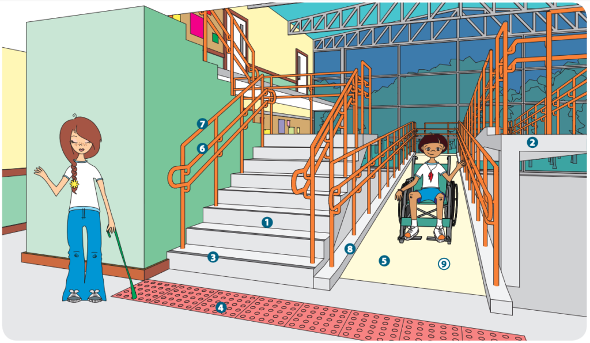

Integrantes: Valentina, Sophia, Isabella e Bianca
Nosso foco principal com este trabalho é comparar se há uma diferença muito grande entre o ambiente escolar físico de redes públicas e/ou privadas, e se houver em quais aspectos. Escolhemos este assunto em decorrência da conversa que tivemos com alguns professores sobre isso, nos interessamos muito pelo assunto e o que mais nos chamou a atenção foi que é algo muito pouco falado ,mesmo sendo algo de extrema importância. tem menu de contexto
Qual a diferença dos espaços físicos escolares públicos e privados para pessoas com deficiência em Santa Cruz do Sul?
Este projeto tem como objetivo geral: Analisar as diferenças de espaços físicos escolares em redes públicas e privadas no município de Santa Cruz do Sul, com enfoque no ambiente escolar que pessoas com deficiências circulam.
Este projeto de pesquisa tem como objetivos específicos: Levantar dados sobre as pessoas deficientes e como são tratadas no ambiente estudantil no município de Santa Cruz do Sul. Avaliar ações existentes nas instituições educacionais aos estudantes e pessoas com deficiência. Analisar as adaptações no ambiente escolar para uma participação integrada e um estudo qualificado que favorecem os deficientes.
Concluindo a pesquisa sobre ambiente educacional fisicamente inclusivo, de acordo com Acessibilidade para deficientes: regras, normas e boas práticas (arquiteturafmc.com.br) foram realizadas pesquisas que englobam os diferentes tipos de espaços acessíveis. Um espaço físico acessível de acordo com a lei Nº 10.098 estabelece normas gerais e critérios básicos para a promoção da acessibilidade das pessoas portadoras de deficiências ou com mobilidade reduzida, mediante a supressão de barreiras e de obstáculos nas vias e espaços públicos, no mobiliário urbano, na construção e reforma de edifícios e nos meios de transporte e de comunicação. Art.2 Para os fins desta lei a acessibilidade, a condição e a possiblidade de todos os acessos com segurança e autonomia dos espaços e meios de comunicação para pessoas portadoras de deficiência. Há muitos tipos de acessibilidade para pessoas portadoras de deficiência, são eles: Acessibilidade atitudinal: referente ao comportamento das pessoas, com o intuito de combater qualquer preconceito Acessibilidade arquitetônica: destinada a remoção de barreiras físicas e ambientais de todos os espaços. Acessibilidade metodológica: acessibilidade dos métodos e técnicas do ensino. Acessibilidade nos transportes: Os meios de transporte e os espaços para pessoas portadoras de deficiência devem ser para promover inclusão. Acessibilidade nas comunicações: propõe maneiras de permitir que a comunicação acontece mesmo sendo portadora de deficiência ou não. As leis de acessibilidade no Brasil proporcionam bases legais para promover e garantir a acessibilidade em diversas áreas, sem elas infelizmente muitas das pessoas com deficiência não poderiam exercer seus direitos de forma plena. A lei 10.098/2000 estabelece normas e critérios para a promoção da acessibilidade. Essa lei propõe o projeto arquitetônico que serve para evitar que pessoas com deficiência assim como idosos e gestantes precisem de apoio extra para usufruir do espaço com autonomia. Ferramentas de acessibilidade e inclusão já foram discutidas e sugeridas, entre elas estão: Placas sinalizadoras Mapa tátil Piso tátil Calçadas regulares Corrimãos Rampas Mobiliário urbano Sanitários adaptados As legislações e normas são muito importantes para a inclusão de pessoas portadoras de deficiência. A norma brasileira reguladora 9050, foi criada pela ABNT em 1985 e serve de base para a arquitetura da acessibilidade para deficientes, é essa norma que determina o conjunto de regras, critérios e parâmetros técnicos que devem ser observados pelos arquitetos. A norma brasileira apresenta determinações para a acessibilidade no país como por exemplo as rampas de acesso, adequação do espaço para para livre circulação de cadeiras de rodas, implantação de uma plataforma elevatória quando necessária, disposição de informações em Braille e a sinalização em vertical e horizontal. Como consequência a NBR é uma importante ferramenta para que o arquiteto reúna condições para desenhar um espaço que seja perfeitamente acessível. O estatuto da pessoa com deficiência é uma lei brasileira de inclusão de pessoas portadoras de deficiência, essa lei foi criada em julho de 2015, que fala sobre os direitos dos deficientes em todas as esferas da vida, incluindo a acessibilidade dos espaços. Pesquisa alguma parte hoje da estaca zero. Mesmo que exploratória, isto é, de avaliação de uma situação concreta desconhecida em um dado local, alguém ou um grupo, em algum lugar, já deve ter feito pesquisas iguais ou semelhantes, ou mesmo complementares de certos aspectos da pesquisa pretendida. Uma procura de tais fontes, documentais ou bibliográficas, torna-se imprescindível para que não haja duplicação de esforços.
![]()
- Tipo de pesquisa: Nossa pesquisa é descritiva, e os procedimentos que usamos foi a entrevista onde fizemos perguntas a alguns alunos e o análise documental onde fizemos pesquisas sobre a acessibilidade dos portadores de deficiências nas escolas. - Procedimento realizado: Essas pesquisas foram feitas através de documentos e entrevistas com alguns alunos de diversas escolas. As perguntas realizadas foram: na escola que você estudava tinha estruturas como: elevador, rampas, e locais adaptados para a passagem de uma cadeira de rodas. A escola era adapta e preparada para receber qualquer tipo de estudante sendo eles com deficiência ou não. - Como é analisado: Essa pesquisa foi analisada comparando como são as escolas e como deveriam ser, vendo que a maioria delas não tem estrutura para receber pessoas com alguma deficiência. Percebemos também que a maioria das escolas de Santa Cruz do Sul não tem todos os preparos para receber essas pessoas. Sem contar no despreparo pedagógico. Porém com o avanço da tecnologia as escolas mais novas estão sendo construídas com estruturas para todas as pessoas, sendo elas deficientes ou não, além de que elas buscam ter o melhor preparo pedagógico. Tanto que essas escolas já apresentam alunos com algumas deficiências.
Após essas pesquisas percebemos os despreparos das escolas para receberem alunos portadores de deficiência, tanto físicas quanto intelectual. Percebemos também que escolas mais novas e com mais tecnologias tem a maioria dos preparos tanto pedagógicos como de estruturas. Assim, consideramos que em Santa Cruz do Sul a maioria dos ambientes escolares não possuem um ambiente físico seguro completo conforme a lei para pessoas que portam deficiências.

A IMPORTÂNCIA da acessibilidade. Notícias - TRE-PE, [S. l.], p. 1, 4 dez. 2020. Disponível em: https://www.tre-pe.jus.br/comunicacao/noticias/2020/Dezembro/a-importancia-da-acessibilidade#:~:text=Ou%20seja%2C%20promover%20a%20acessibilidade,ao%20p%C3%BAblico%20ou%20de%20uso. Acesso em: 15 maio 2023. FMC arquitetura. Acessiblidade para deficientes, [S. l.], p. 3, 21 dez. 2022. Disponível em: https://arquiteturafmc.com.br/acessibilidade-para-deficientes/. Acesso em: 15 maio 2023.